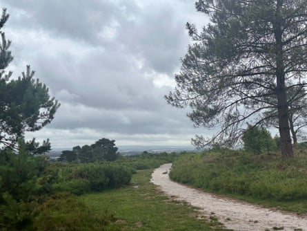

T he constant droning of the nearby road fights against the increasing wind gusts as I venture further on to the heath. As sirens blast out in the town below, stonechats zip from gorse bush to gorse bush, and southern wood ants , otherwise known as red wood ants, rampage across the sandy paths.
It’s an overcast but mild day. I’ve decided to come for an afternoon walk at Canford Heath nature reserve near Poole in Dorset. The site covers more than 344 hectares (approximately 850 acres) – one of the largest remaining heaths in Dorset. UK lowland heathland is an incredibly important habitat, now rarer than tropical rainforest due to its degradation and destruction, with only about 16% left of the area that existed in 1800 .
Canford Heath nature reserve, Dorset.Photograph: Mya Bambrick
Scanning across a sea of gorse and heather, I can see Poole harbour in the distance and the urban sprawl that borders the reserve. Despite its closeness to urbanisation, Canford Heath is home to charismatic heathland species such as the nightjar , sand lizard , hobby and the secretive Dartford warbler . Waiting patiently, I hear a snippet of the warbler’s distinctive, scratchy song – but the bird remains hidden.
The Dartford warbler was once rare in the UK. Habitat loss and the harsh winter of 1962-63 (often referred to as the big freeze) nearly saw the bird wiped out, and only 10 pairs were left in Dorset. With increased conservation efforts to restore and recreate lowland heathland, their numbers have thankfully increased in the past 50 years to about 3,200 pairs , with the county now a stronghold. Unlike most warblers, the species remains in the UK all year round.
Towards the end of my walk, I stop abruptly as that familiar song emerges from the heather next to me. Waiting patiently, I finally see a fleeting glimpse of its long tail, dark grey back, russet breast and bright red eye ring as it dives into a nearby gorse bush. It’s the elusiveness of the Dartford warbler that I love – a bird of mystery, yet one that regularly announces itself.